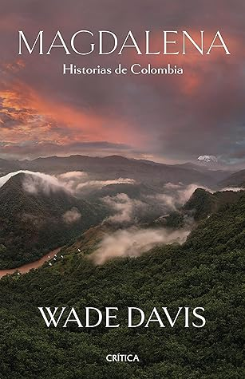

Magdalena. Historias de Colombia (Spanish Edition)
Reseña por Jorge I. Zuluaga

Ver detalles · Ver reseña en GoodReads (necesita cuenta)
Había leído en estos años un par de libros de la historia de Colombia, unos más académicos, otros más originales. Pero más bonito que «Magdalena», más humano, ninguno de los anteriores.
Decía Heródoto que Egipto es un don del Nilo. Hoy, después de leer «Magdalena: Historias de Colombia», solo puedo decir, parafraseando al viajero griego —que ahora se me antoja como un Wade Davis de la antigüedad (o quizás debería decir que Wade es un Heródoto de la modernidad)—, que Colombia es un don del Magdalena.
Y es que las analogías entre el Nilo y el Magdalena no terminan en una bonita frase. *Yuma, Guaca-Hayo, Karakalí, Kariguaña*, como aprendí en este libro que se le dice a este fantástico don de las montañas de Colombia, es uno de los poquísimos ríos ecuatoriales (no hay más de un puñado) que corren hacia el norte, como lo hace también el Nilo.
El Magdalena baña tierras fértiles y desérticas, como el Nilo en sus miles de kilómetros de extensión, y así como los egipcios se mantuvieron aislados de sus pueblos vecinos por los abundantes dones ofrecidos por el Nilo, pero también por los accidentes geográficos que los rodean, los pueblos originarios de Colombia se mantuvieron aislados, viviendo del Magdalena también por miles de años, encerrados entre las montañas que lo alimentan y lo encauzan hacia la inmensa depresión del norte de Colombia y por el mar que se nutre de sus aguas. Aquí también el Magdalena se estanca, como lo hace el Nilo, creando tierras fértiles, tanto para la alimentación como para la cultura. Las tierras que en Egipto crearon más de una cosmogonía, aquí nos han llenado de música y comida.
Como libro de historia, sin embargo, «Magdalena» no es completamente exhaustivo. Aun así, en sus páginas desfilan casi todos los episodios importantes de la centenaria historia de «Colombia», el país que nació alrededor de la cuenca del Magdalena. Poco queda por fuera de la colección de las amenas narraciones de Wade Davis, una verdadera historia de Colombia *a la* Wade. Por el Magdalena desfilan, mientras él y sus amigos descienden del macizo colombiano, los conquistadores, la Colonia, el holocausto indígena, la Patria Boba y la Patria Nueva, las guerras, la esclavitud, la depredación natural de los años 1800, la violencia de los 1900, el narcotráfico y la violencia paramilitar, hasta llegar al puerto de «la paz», la esquiva paz que nos dejó un inconcluso acuerdo a punto de naufragar en el «Uribato».
Muy grata es la impresión que me dejó también Wade cuando habla bien de casi todo el mundo. En el mejor parlache colombiano, ¡se nota que es un verdadero «bacán»!
Por un lado, elogia la sabiduría de los pueblos originarios, demuestra gran respeto por sus enseñanzas, por su conocimiento del río, las montañas y las plantas; por el otro, no niega *el coraje, la fortaleza, la resistencia y el celo que impulsó [a los conquistadores] a la fama y la locura, a la gloria y a la riqueza, a la victoria, la humillación, el deshonor y la muerte*. Convierte a un «gremio» odiado en un grupo de personas que, al margen de sus horripilantes crímenes, también merece un poco de admiración.
Asimismo, es capaz de hablar con Juan Manuel Santos como con su archienemigo Álvaro Uribe Vélez y de resaltar de ambos sus mejores cualidades. Me sorprendió también ver retratados muy positivamente personajes que, por los ires y venires políticos, hoy no gozan en Colombia de la mejor imagen (especialmente entre los jóvenes), como Carlos Vives, Sergio Fajardo y Álvaro Uribe. Hasta a esos personajes les encuentra uno, con Wade Davis, cualidades indudables (no es que haya creído siempre que no las tengan; es que, en el momento político de Colombia, tiene que ser un extranjero el que se las recuerde a uno).
Por primera vez veo una crítica seria a algo que muchos antioqueños hemos experimentado con incomodidad: el anacrónico y antiecológico estribillo del himno de Antioquia con su apología *al hacha de mis mayores*; la misma hacha que tumbó la frondosa selva que rodeaba el Magdalena en nombre de una supuesta civilización. Afortunadamente, Colombia, la Colombia salvaje de la cuenca del Magdalena, es más resiliente que esa cultura de la tala desenfrenada de otros tiempos (¡la tala de hoy es distinta! ¡es peor!, pero nadie la incluye en un himno). Muchos de esos bosques talados para alimentar las calderas de los barcos que subían por el Magdalena, como lo narra deliciosa (y dolorosamente) Wade, se recuperaron.
La apología a la coca, cuya hoja puede *satisfacer el hambre, dar fuerza al cansado y exhausto y hacer al infeliz olvidar sus tristezas*, como escribió alguna vez Garcilaso de la Vega, citado por Wade, vuelve a estar en el foco del libro. En este sentido, Wade recomienda que, si la *coca se comerciara como té, como suplemento nutritivo, podría volverse el mejor regalo de Colombia para el mundo*. ¡Qué distinta sería Colombia!
San Agustín, como es descrito por Wade en este libro, resultó ser un verdadero descubrimiento para mí. Debo reconocer, ahora, lo poco que conozco a mi país y lo mucho que un extranjero puede todavía enseñarme.
Después de admirar por mucho tiempo los monumentos de incas, mayas y aztecas, saber que una civilización misteriosa hizo cosas en nuestra propia tierra y, en tiempos tal vez remotos, construyó monumentos que apenas todavía nos esforzamos por comprender, me emociona mucho. Ahora quiero conocer San Agustín, quiero ver esas rocas talladas *por un pueblo que no tenía herramientas de metal*.
Me quedo con varios libros por leer: «La vorágine», de José Eustasio Rivera, que Antonio Caballero llamaba la novela de Colombia; «El general en su laberinto», de García Márquez, que cuenta esos infaustos días en los que Simón Bolívar, mientras bajaba por el río, pensaba en el país que había creado y que también lo había rechazado; y «El amor en los tiempos del cólera», también de García Márquez, una novela admirada que se desarrolla en el río.
También me quedan sitios que debería visitar alguna vez: ya lo mencioné, San Agustín, pero también Mariquita, donde quiero ver los árboles sembrados por Mutis, y Mompox, ese pueblo congelado en los tiempos en los que el Magdalena era la «autopista» más importante de Colombia.
Como buen científico, Wade siempre está dejando escapar daticos asombrosos (¡soy adicto a los datos ñoños!): que los fríjoles son las únicas semillas que primero fueron adorno que comida; que si toda el agua del planeta se pusiera en un galón, la que podríamos tomar cabría en una cucharadita; que Colombia tiene 26.000 especies de plantas florales, mientras que Canadá, con diez veces su área, solo tiene 3.000; que en el bajo y medio Magdalena podría esconderse un país como Inglaterra; y así, lentamente, va soltando perlitas que hacen del libro, además de un cautivador viaje por el Magdalena y por la historia llena de contradicciones de Colombia, una obra científica en código literario sobre nuestro país.
No quiero terminar sin mencionar que hay un Magdalena también en el cielo. Se trata de una enorme nube de gas y de estrellas que abarca miles de años luz, creada no por la fuerza del agua y de las montañas como nuestra Yuma, sino por la gravedad de millones de estrellas, explosiones de supernovas antiguas y eones de evolución galáctica. Eternizar el río Magdalena en el cielo es un legado muy bonito que corrió por cuenta de mi colega Juan Diego Soler, a quien, después de terminar este libro, le estoy aún más agradecido.
Como decía García Márquez, el Magdalena no es un escenario, es un personaje. Gracias a Wade por ayudarnos a redescubrirlo.
¡Lean ya «Magdalena»!
Maullido final. Una pregunta que me quedó, y que espero que no suene muy «tóxica». No me quedó muy claro cuál era el papel de Xandra Uribe en todo el libro. Entiendo que ella fue promotora del viaje y ayudó a contactar a algunas de las asombrosas personas que encuentra Wade en su camino del Macizo hasta Bocas de Ceniza. Pero su inclusión en toda esta historia me dejó un mal sabor de boca, debido a un reconocido oportunismo de las clases altas del país. Espero estar completamente equivocado.